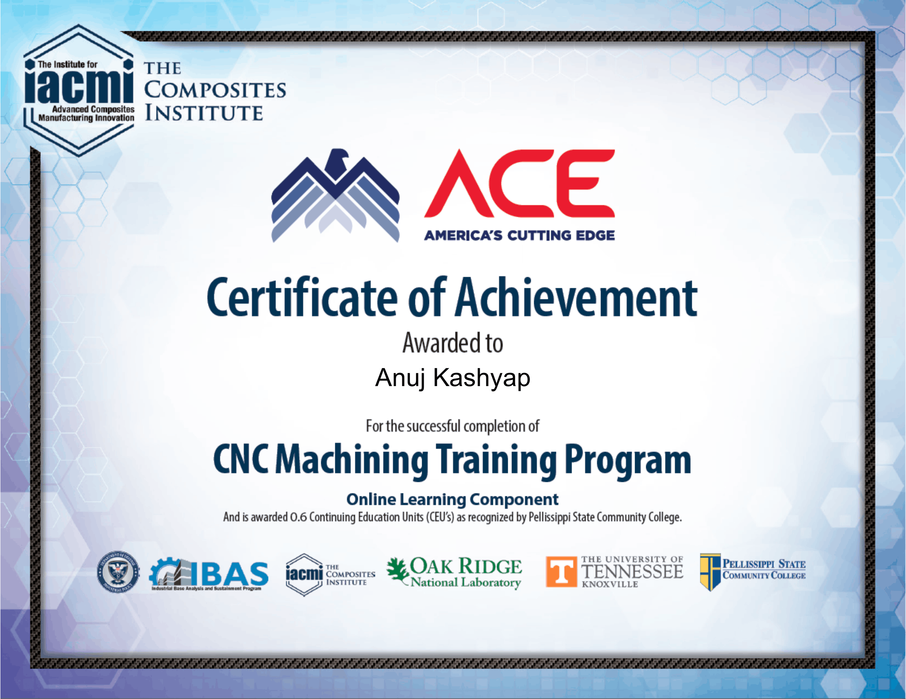
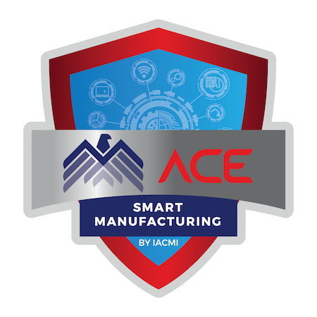
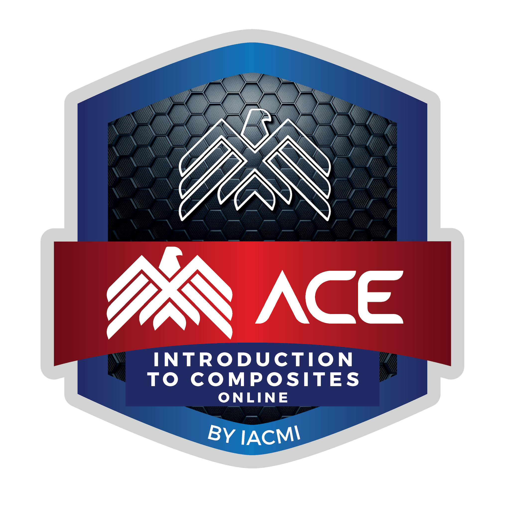
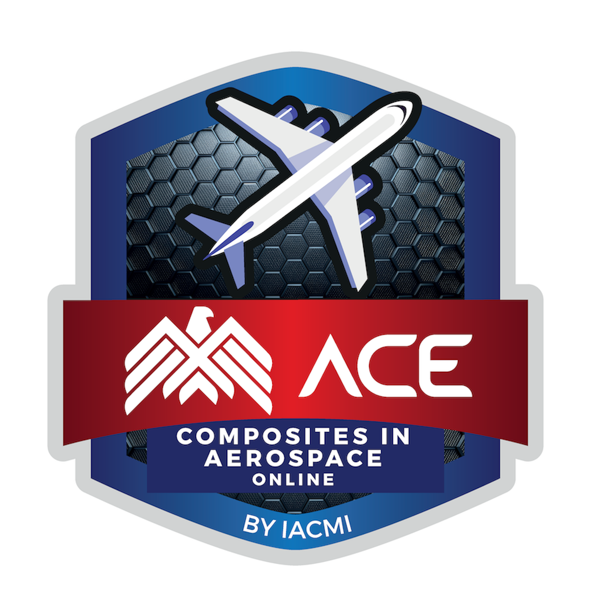

Certifications
This page highlights technical certifications and training I have completed in aerospace systems modeling, digital engineering, manufacturing, machining, metrology, smart manufacturing, composite materials, and quality methods.
STK Level 2 Master Certification
Certification demonstrating advanced use of Systems Tool Kit for aerospace mission modeling, scenario development, visualization, and analysis workflows.
Skills: STK, aerospace systems, mission modeling, scenario analysis
STK Level 1 Certification
Certification covering foundational STK skills including scenario setup, object modeling, visualization, and basic aerospace analysis workflows.
Skills: STK, orbital visualization, aerospace analysis
America’s Cutting Edge CNC Machining Certification
Certification focused on CNC machining fundamentals, manufacturing workflow, machine operation, setup, and practical CNC knowledge.
Skills: CNC machining, Autodesk Fusion 360, manufacturing workflow

Image slot: cert-ace-cnc.pngACE Smart Manufacturing
Training focused on modern manufacturing systems, digital workflows, automation, production technologies, and data-driven manufacturing concepts.
Skills: smart manufacturing, automation, digital workflows

Image slot: cert-smart-manufacturing.pngACE Composites Certifications
Completed composite materials training covering introductory composite concepts and aerospace composite applications. These certifications support my interest in lightweight structures, manufacturing, and aerospace design.
Skills: composite materials, aerospace composites, layup concepts, lightweight structures

Badge slot: cert-composites-intro.png
Badge slot: cert-composites-aerospace.pngMetrology Certification
Training focused on measurement methods, inspection tools, dimensional verification, tolerances, and quality control practices used in manufacturing.
Skills: measurement, inspection, tolerances, quality control
 Image slot: cert-metrology.png
Image slot: cert-metrology.png
Six Sigma White Belt
Introductory certification covering Six Sigma principles, process improvement, waste reduction, and quality-focused problem solving.
Skills: process improvement, quality methods, problem solving